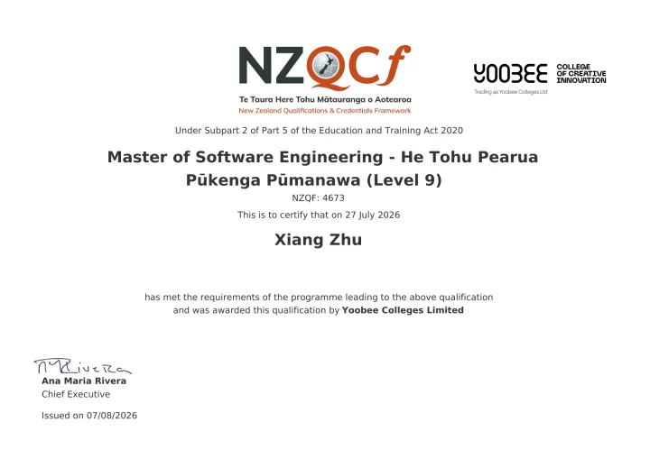
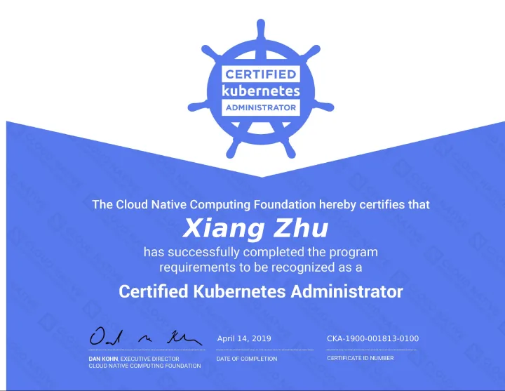
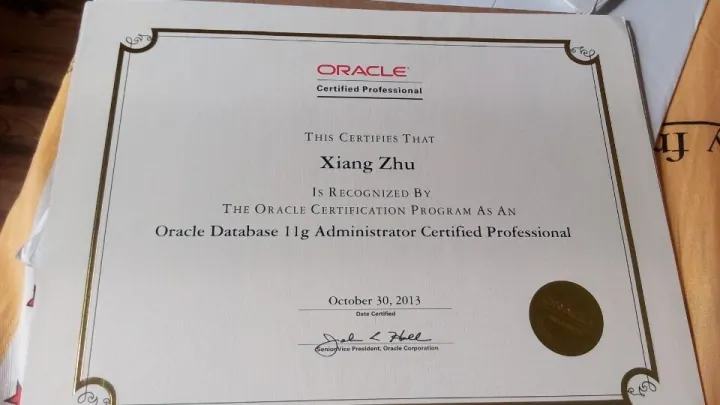

Master of Software Engineering
Yoobee Colleges · NZQF Level 9
View certificateQualifications & professional learning
My academic degree and professional certifications, with award dates and certificate images. Select a certificate to view the full image.

Yoobee Colleges · NZQF Level 9
View certificateHashiCorp · Valid until 24 October 2028

CNCF
View certificate
Oracle
View certificate